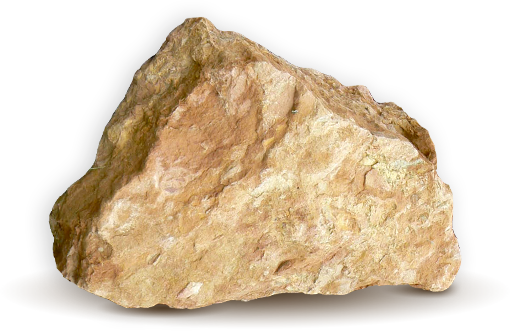
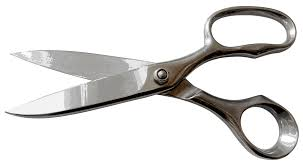

Rock Paper Scissors
 
Goal:
Use a Random object to generate random integers so your code can play Rock Paper Scissors with you.
Steps:
- Create a Random object.
- Generate a random number to represent rock, paper, or scissors in a game.
- Play Rock Paper Scissors against the computer to test your code.